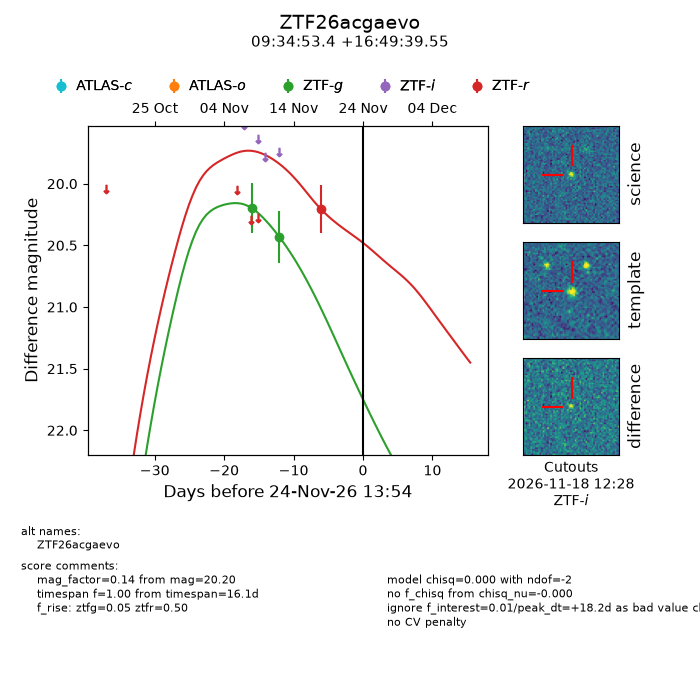
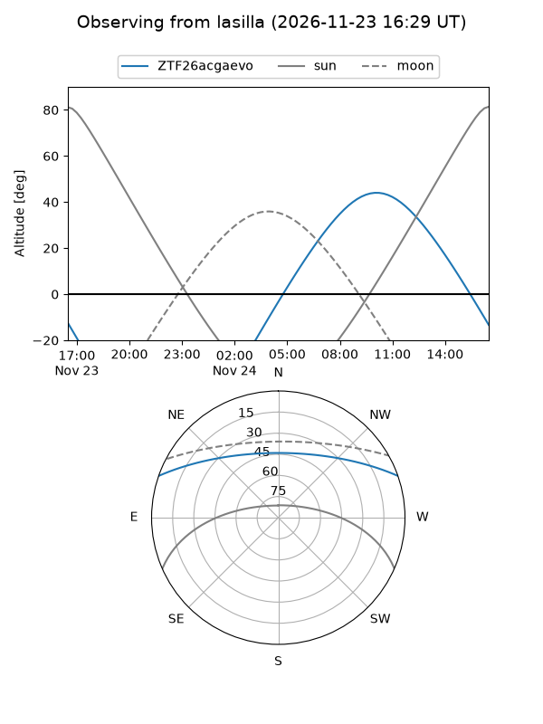
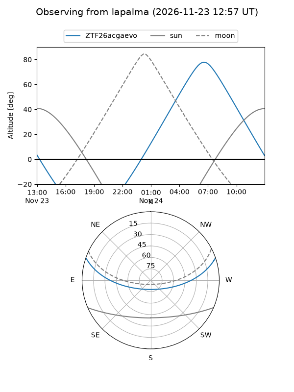
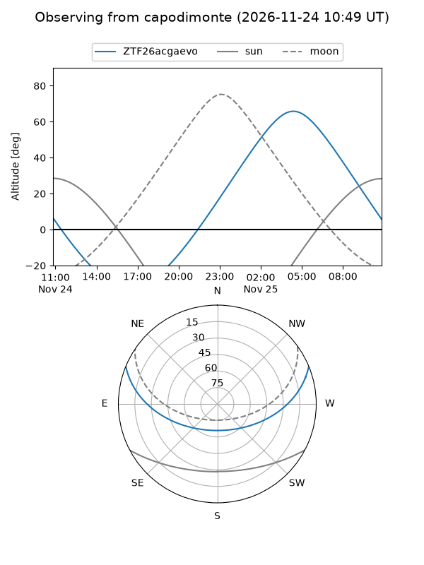
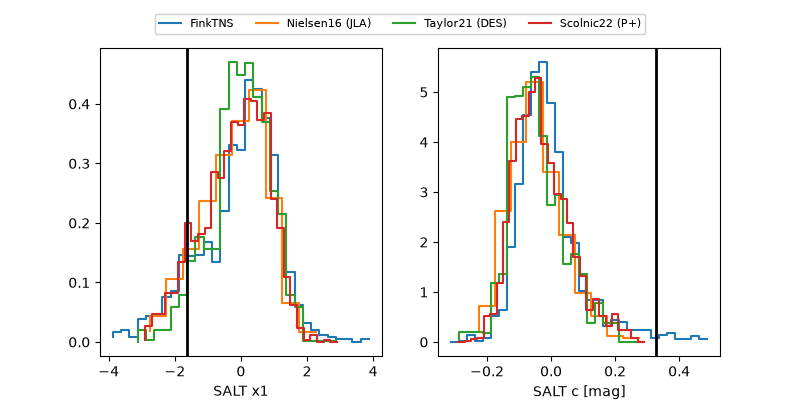

ZTF26acgaevo
Target ZTF26acgaevo at 2026-11-24 13:56
Aliases and brokers:
FINK-ZTF: ztf.fink-portal.org/ZTF26acgaevo
Lasair-ZTF: lasair-ztf.lsst.ac.uk/objects/ZTF26acgaevo
ALeRCE-ZTF: alerce.online/object/ZTF26acgaevo
Direct TNS query: direct search
alt names
ZTF26acgaevo (ztf,fink_ztf)
Coordinates:
equatorial (ra, dec) = 143.7226,+16.82765
equatorial (HMS+DMS) = 09:34:53.43,+16:49:39.55
galactic (l, b) = (215.1398,+43.57868)
Flags:
peak dt: +18.2
Photometry:
last ztfg=20.43, ztfr=20.20
2 ztfg, 1 ztfr detections
Lightcurve

Visibility



Additional plots
